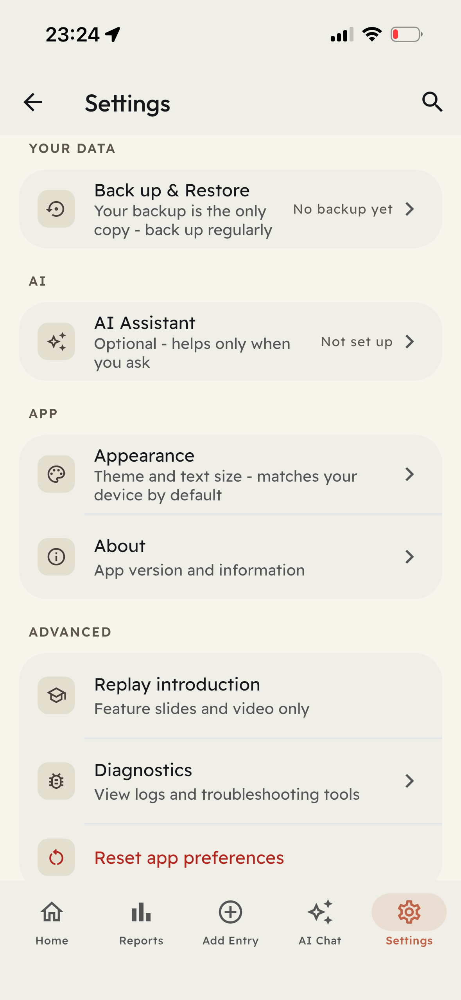
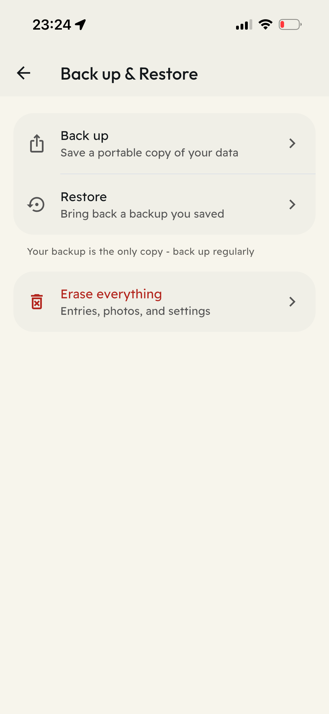
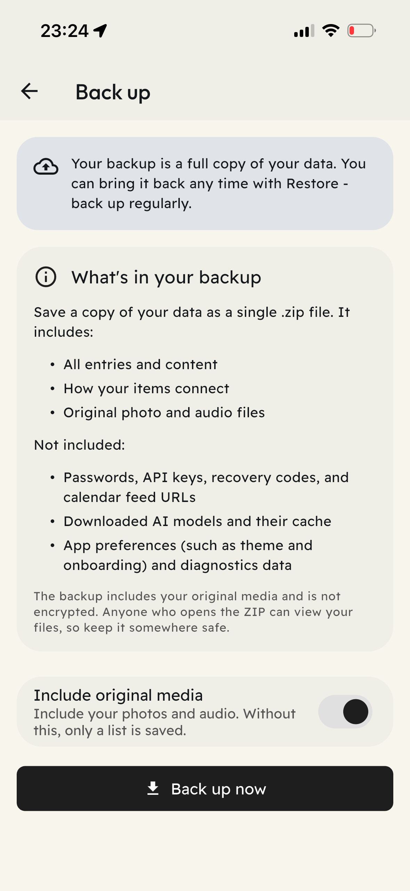
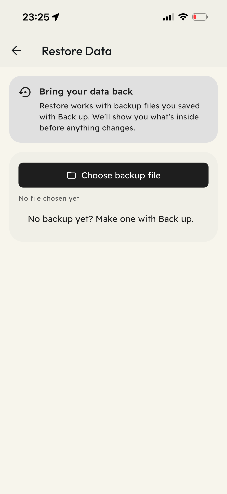

Replacing your phone, losing it, or reinstalling an app can put years of saved information at risk. A backup gives you a separate copy of what you've collected in SynDiary.
Your SynDiary data lives on your device. SynDiary doesn't keep a server copy that our team can recover for you. Make a backup before you need one, and keep a copy away from your phone.
How to back up your SynDiary data
1. Open your backup settings
Go to Settings → Back up & Restore → Back up.




2. Choose what to include
Leave Include original media enabled to create a ZIP file with your entries, their connections, and the original photos and audio recordings available in SynDiary.
Turning it off creates a smaller JSON export with your entries and media references, but no original photos or audio files. Those references cannot recover missing media. Choose the ZIP option if you want to back up your photos and recordings too.


3. Create the backup
Tap Back up now and read any security notice before continuing. The ZIP backup is not encrypted. Anyone who opens it can view its contents, so protect the file before sharing or storing it.
When the export finishes, SynDiary shows Backup ready, a summary of the exported items, and the file size. Check for warnings about information or media that could not be included.
4. Save the file
Choose Save to device to pick a location, or Share to transfer the file using your phone's sharing options.
"Backup ready" means the export is prepared. You still need to save or transfer it. Check that the file appears in the location you chose.
5. Keep a copy away from your phone
A backup stored only on your phone can be lost with it. Keep another copy in a protected location, such as an encrypted external drive or an encrypted file vault.
The file contains sensitive personal information. Protect any unencrypted export before sharing or storing it, and avoid public folders.
How to restore your data
- Open Settings → Back up & Restore → Restore.
- Select Choose backup file and choose a ZIP or JSON file previously exported from SynDiary.
- SynDiary checks the file and shows a summary. Review it, choose Add to SynDiary, and confirm.
- Keep the app open until the restore finishes. Review the results and check that the entries and media you need are available.


A JSON-only export cannot restore original photos or audio files that are missing. For those, you need a backup that includes the media.
Keep your backup useful
Once a month is a practical starting point. Back up more often if you add important information frequently, and always before replacing your phone or uninstalling SynDiary.
Check that each export was saved, review any warnings, and keep separate copies of media that could not be included. Store copies in separate locations so losing one device doesn't mean losing everything.
If your protected storage uses a recovery code, keep it somewhere secure and separate from your phone. A recovery code does not replace a backup of your entries.
For more help, visit the SynDiary Help Center or read Managing your data.